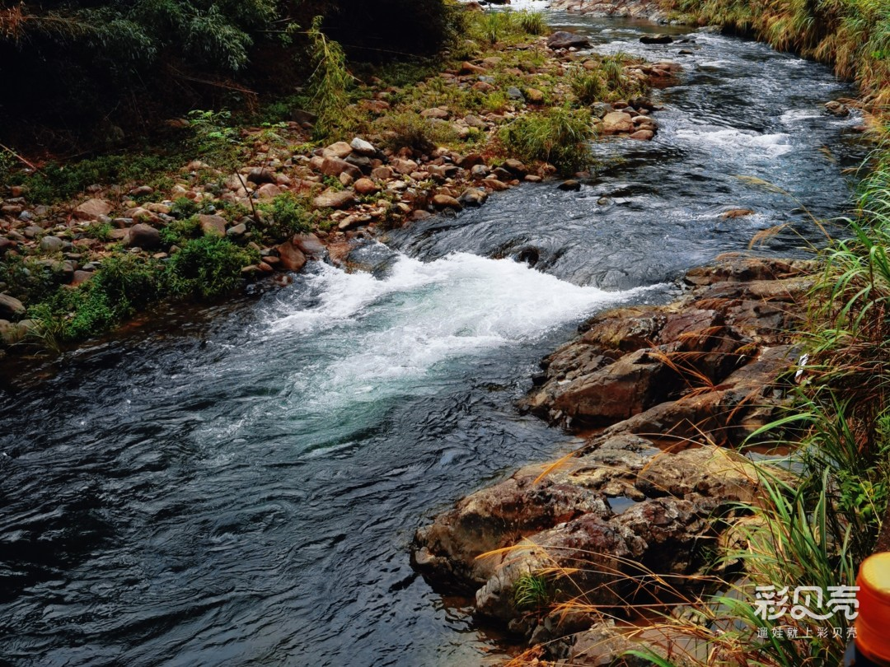

FIELD NOTE 01安吉 · 山野与夏天 产品页面素材

安吉 / 2 天 1 晚
季节产品 · 体验组合 · 成本优化
夏日玩水
＋萤火虫之夜
用夏季玩水需求引入，以萤火虫体验形成主题记忆，再把车辆成本优化落到具体报价。
线路组合溯溪、叫花鸡制作、亲子漂流、萤火虫观赏与自然博物馆；兼顾亲子共同参与和自然探索。
4期暑期成团
150＋人累计报名
约5,000元单期毛利
本人负责：主题与线路、资源沟通、成本与定价、推广售卖、执行与复盘。
看看我的商业判断
把“有吸引力”与“成本合理”一起考虑
锚定夏日玩水与萤火虫这一体验亮点，给游客清晰的出游理由；在供应商沟通中，直接推进 53 座大巴议价。
原报价
谈定报价
该项报价减少 600 元，降幅约 15.8%。
暑期 4 期合计毛利约 2 万元。报价降幅仅对应大巴这一项，不等同于整个产品成本或利润的变化幅度。